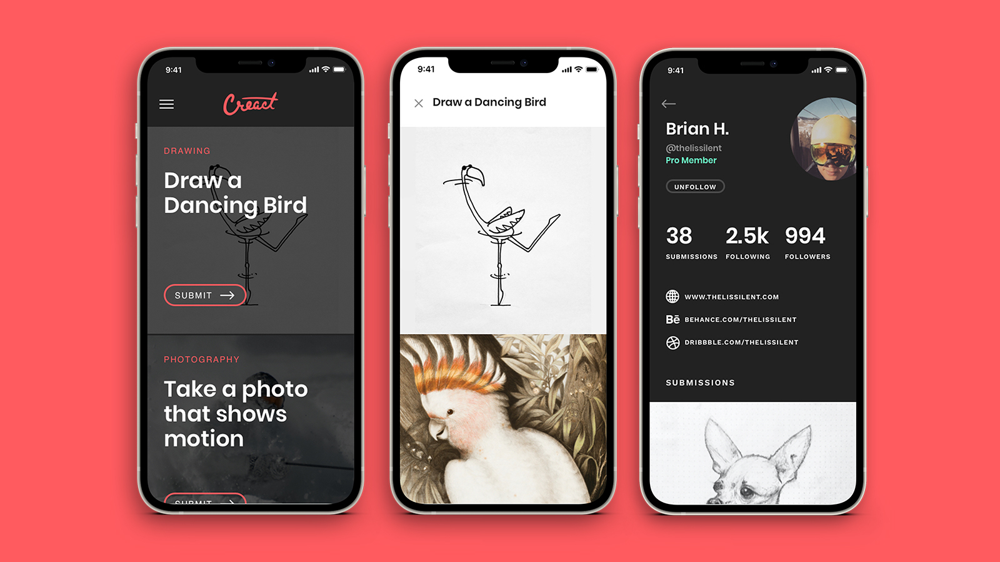

Creact
Creact was a passion project of mine. Meant for artists, Creact provided daily art & drawing challenges for its users. I served as creative director, UX/UI designer, product manager, marketer. I worked with two killer engineers to bring the idea to live on iOS and Android, but it never got enough traction.

The Creact app allowed you to create an account to keep track of your daily challenge submissions. You could also see what others had drawn for the daily challenge. It was a fun project to lead, but it never got the traction it needed for us to maintain it. I also built an admin tool to allow the team to quickly add new challenge ideas to thge queue, see our users, and view past challenges.